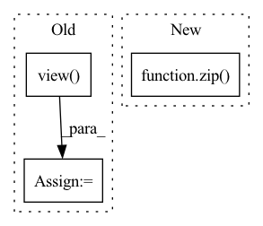

Pattern ID :735
Before Change
preds = F.interpolate(preds, size=labels.shape[1:], mode="bilinear", align_corners=False)
n_min = labels[labels != self.ignore_label].numel() // 16
loss = self.criterion(preds, labels).view( -1)
loss_hard = loss[loss > self.thresh]
if loss_hard.numel() < n_min:
loss_hard, _ = loss.topk(n_min)After Change
def forward(self, preds, labels: Tensor) -> Tensor:
if isinstance(preds, list):
return sum([w * self._forward(pred, labels) for (pred, w) in zip( preds, self.aux_weights) ])
return self._forward(preds, labels)
In pattern: SUPERPATTERN
Frequency: 3
Non-data size: 3
Instances Fragment ID: 2436949
Project Name: sithu31296/semantic-segmentation
Commit Name: b68900992fb24dd5166b2b34e3d35d19493d747d
Time: 2021-08-21
Author: sithu31296@gmail.com
File Name: utils/losses.py
M Class Name: OhemCrossEntropy
N Class Name: OhemCrossEntropy
M Method Name: forward(3)
N Method Name: forward(3)
M Parent Class: nn.Module
N Parent Class: nn.Module
M File Name: utils/losses.py
N File Name: utils/losses.py
M Start Line: 25
M End Line: 37
N Start Line: 46
N End Line: 49
Before Change
x = self.avgpool(x) // 1x1
features.append(x)
x = x.view( x.size(0), -1)
x = self.fc(x)
return x
@staticmethodAfter Change
features = self._forward(images)
features = [f.chunk(2) for f in features]
// diffs = [a * torch.abs(p[0] - p[1]).sum() for a, p in zip(self.alphas, features)]
diffs = [a * torch.abs(p[0] - p[1]).mean() for a, p in zip( self.alphas, features) ]
// diffs = [a*torch.abs(self.norm_tensor(tf) - self.norm_tensor(rf)) for a, tf, rf in zip(self.alphas, true_features, rec_features)]
// diffs = [a * torch.mean(torch.abs(tf - rf)) for a, tf, rf in zip(self.alphas, features)]
Fragment ID: 2436950
Project Name: casualganpapers/make-a-scene
Commit Name: 89ba77e885ac1c12ac2d5df5a6b3da842e30bfe0
Time: 2022-05-26
Author: 61938694+dome272@users.noreply.github.com
File Name: losses/face_loss.py
M Class Name: ResNet
N Class Name: ResNet
M Method Name: forward(3)
N Method Name: forward(2)
M Parent Class: nn.Module
N Parent Class: nn.Module
M File Name: losses/face_loss.py
N File Name: losses/face_loss.py
M Start Line: 127
M End Line: 151
N Start Line: 163
N End Line: 177
Before Change
def forward(self, content_code, class_code):
batch_size = content_code.shape[0]
content_code = content_code.view( (batch_size, -1, 4, 4))
if self.training and self.config["content_std"] != 0:
noise = torch.zeros_like(content_code)
noise.normal_(mean=0, std=self.config["content_std"])
out = content_code + noise
else:
out = content_code
for layer in self.layers:
out = layer(out, class_code, None)After Change
skip = self.to_rgb1(out, latent[:, 1])
i = 1
for conv1, conv2, to_rgb in zip( self.convs[::2], self.convs[1::2], self.to_rgbs) :
out = conv1(out, latent[:, i])
out = conv2(out, latent[:, i + 1])
skip = to_rgb(out, latent[:, i + 2], skip) Fragment ID: 2436945
Project Name: avivga/overlord
Commit Name: b0f943171d9586ee561baa9a794cfcd4fe07b753
Time: 2020-08-17
Author: avivga@gmail.com
File Name: network/modules.py
M Class Name: Generator
N Class Name: Generator
M Method Name: forward(3)
N Method Name: forward(3)
M Parent Class: nn.Module
N Parent Class: nn.Module
M File Name: network/modules.py
N File Name: network/modules.py
M Start Line: 42
M End Line: 57
N Start Line: 67
N End Line: 85